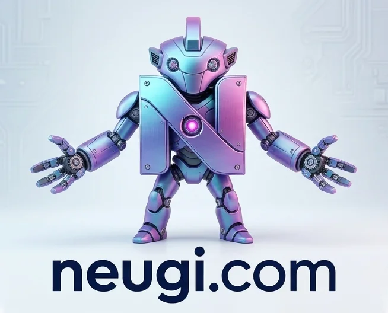

Neugi Swarm Documentation
Welcome to the Neugi documentation. Here you will find everything you need to know about setting up and running a local fleet of specialized, deterministic AI agents capable of raw operating system execution.
Quickstart
To begin, ensure you have Python 3.11+ and Ollama installed. Run the one-line install script on your terminal.
Windows (PowerShell)
irm neugi.sh/install | iexmacOS / Linux
curl -fsSL https://neugi.sh/install | bashOnce cloned, initialize the dashboard ecosystem using:
python3 neugi_wizard.pyGod Mode Root Integrity
By default, Neugi incorporates strict safety evaluations via the Shield node. Operations mutating kernel state, deleting significant directory trees, or exposing subnets are immediately blocked.
You can bypass these bounds entirely for total autonomy by triggering God Mode:
export NEUGI_GOD_MODE=1
python3 neugi_assistant.pyContext Memory (RAG)
Neugi utilizes a built-in highly-optimized CodebaseRAG class bridging the gap between small context windows and massive code repositories. It reads local files deterministically without heavy dependencies like ChromaDB.
- Agents can trigger the
search_memory(query)tool to pull Top-K snippets natively. - The
Auroranode directly indexes directories, bypassing massive token ingestion. - Context remains active across isolated terminal sessions.
The Agentic Network
Rather than relying on one monolith query, Neugi uses Multi-Agent Orchestration via the delegate_task(target_agent, task) mechanic.
- Cipher — Code Syntax & logic checks.
- Quark — Logical and strategic planning.
- Nexus — The Orchestrator capable of routing sub-tasks dynamically.
Anti-Monolith Mechanisms (Easter Eggs)
Because Neugi is built natively and rapidly without immense overhead, it actively mocks bloated visual-pipeline architectures (like OpenCLAW) out of the box via the NEUGI_SATIRE_QUOTES dictionary. Initiate the CLI and watch the TUI loading frames randomly cycle through 30+ highly sarcastic loading messages.
Expanding the Toolset
Phase 6 incorporates powerful filesystem access and safe execution defaults. Native tools include: web_crawl, read_local_file, list_directory, and git_execute. Adding a tool natively takes less than 5 lines of Python, bypassing YAML configuration overhead completely.
Last updated March 15th, 2026.